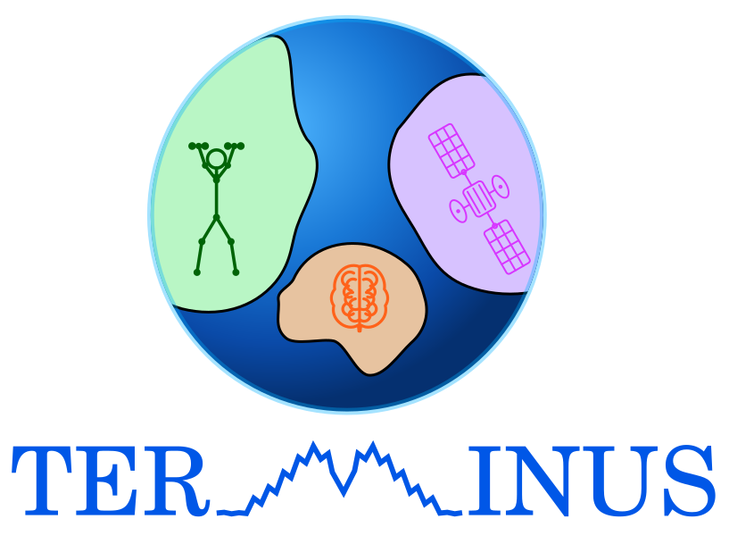

TERMINUS
Domain Foundation for
Time Series Classification

Some news
Domain Foundation Models for Time Series Classification
The TERMINUS project develops Domain Foundation Models (DFMs) for time series classification in domains such as healthcare, finance, and industry. By tailoring models to the unique characteristics of each domain, TERMINUS aims to improve performance and generalization compared to general-purpose foundation models. The project investigates key DFM components, including self-supervised learning, knowledge distillation, and test-time adaptation, while emphasizing efficiency, sustainability, and reduced training and annotation costs through fine-tuning.
Project Duration: January 2026 - December 2029
Funding: ANR PRME
Keywords: Time Series Classification, Domain Adaptation,
Transfer Learning, Deep Learning, Temporal Modeling
Project Description
Explore the project objectives, work packages, and detailed research plans.
Learn MorePartners & Team
Meet our research team and partner institutions from leading French universities.
Learn MorePublications
Access project publications and key references in time series classification research.
Learn MoreAbout
Learn more about project funding, institutional affiliations, and contact information.
Learn MoreTime Series Classification